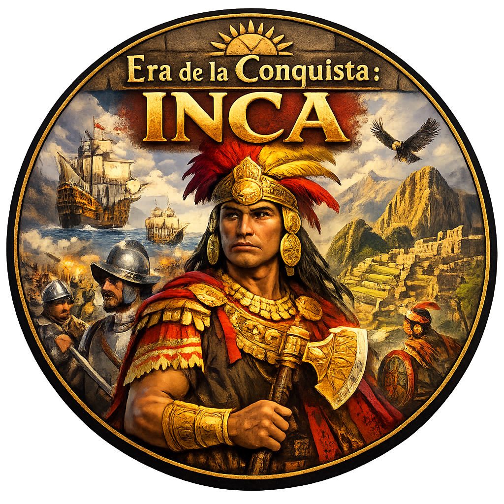

En medio de la llegada de los conquistadores españoles, el Imperio Inca enfrenta su mayor desafío. En la era de la conquista: INCA, el jugador asume el rol de líder responsable de las decisiones políticas, militares y sociales que definirán el destino de su pueblo. Organizar estrategias, formar alianzas, gestionar recursos y enfrentar la presión de colonización en un viaje marcado por la guerra, la resistencia y la supervivencia. Inspirado en eventos Histórico, el juego busca retratar los impactos de la invasión europea y los desafíos que enfrenta la civilización inca.